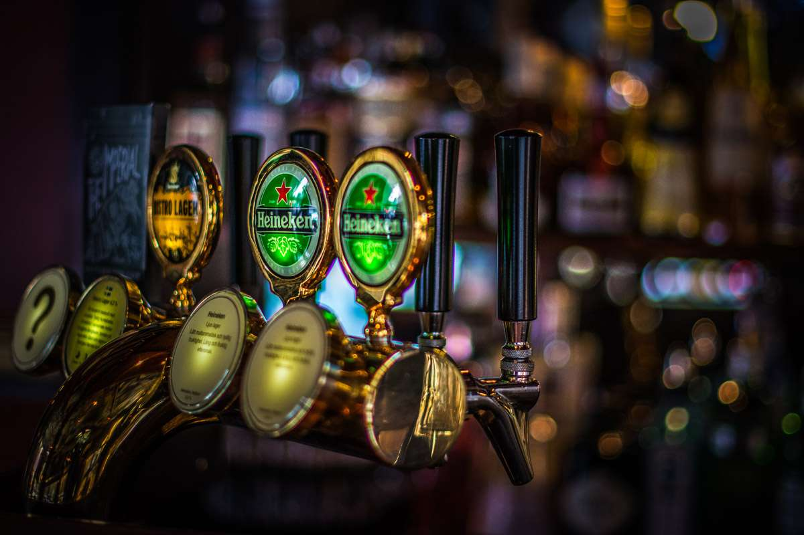
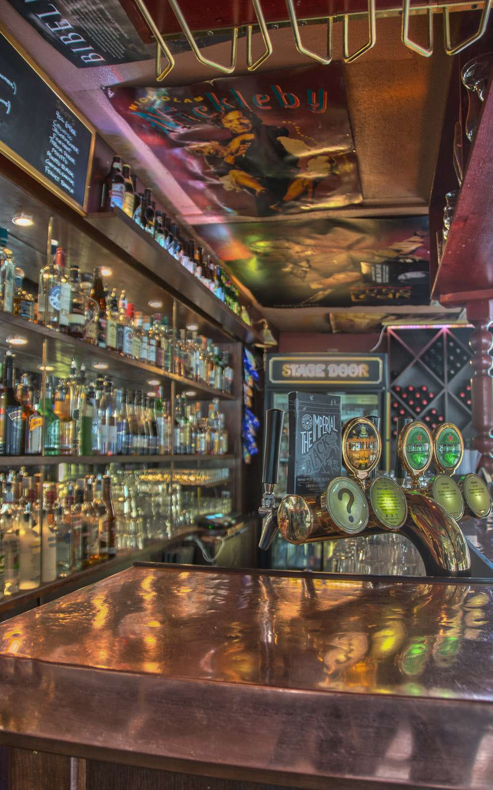

Öppet i kväll
Berzeliigatan 12, Göteborg
Sön – tors16 – 01
Fredag15 – 02
Lördag14 – 02
Precis som namnet antyder är Stage Door ett populärt inneställe för stadens alla musik-, teater- och varietéartister. Här kan Du alltid äta en bit mat från vår prisvärda meny, njuta ett glas gott vin eller varför inte bara en stilla öl i vår trivsamma bar. Vällagad mat, utvalda viner och en gemytlig atmosfär gör att vi tror att Du kommer få en trevlig kväll!

Platshållare – öllista från Stage Door
Från kranen
Här listas kranar och flaskor när Stage Door skickat sin öllista.

Kran 1
Kran 2
Kran 3
Kran 4


Hitta hit
Restaurang Stage Door
Berzeliigatan 12
412 53 Göteborg
Vi öppnar dessutom tidigare under större evenemang.